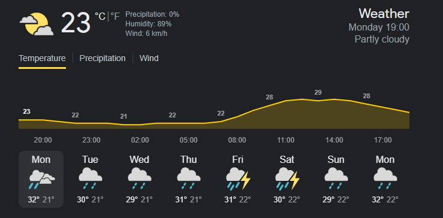

⛈️Noticia sobre o tempo⛈️

Clima é a caracterização das condições atmosféricas de uma determinada região através de registros de um longo período de tempo. Estas condições incluem temperatura, chuva, pressão atmosférica, umidade do are vento, por exemplo. O clima depende de diversos fatores, como circulação atmosférica, localização geográfica, altitude e proximidade com o oceano.
Existe o clima tropical, equatorial, subtropical, temperado, semiárido, árido e outros.
As atividades humanas estão provocando mudanças climáticas globais, através do aumento das emissões de gases de efeito estufa. Assim, ocorre o aumento da temperatura média da Terra e a intensificação de eventos climáticos extremos, como tempestades severas e secas mais prolongadas.
A previsão do tempo é uma descrição detalhada do comportamento da atmosfera esperado no futuro, ou seja um prognóstico ou estimativa do estado do tempo para as próximas horas, dias e semanas. Para fazer a previsão, os meteorologistas utilizam como base modelos meteorológicos objetivos, com diferentes resoluções e que consideram parâmetros atmosféricos. Na Climatempo, são analisados os mais diversos tipos de dados e modelos, combinando-os com a experiência e habilidade de nossos profissionais para chegar a um consenso.
Temperatura é uma propriedade física e é definida como a medida da agitação das moléculas de um corpo. Quanto maior a agitação dessas partículas, maior a temperatura do corpo. Ela é medida por um termômetro, geralmente em unidades de graus Celsius (°C) ou Fahrenheit (°F). Já o calor é a energia transferida entre dois corpos que apresentam diferença entre suas temperaturas. O calor pode ser transferido por condução, convecção ou radiação. As suas unidades de medida são joules ou calorias. A temperatura do ar é a quantidade de calor presente no ar, sendo uma das principais variáveis do clima.